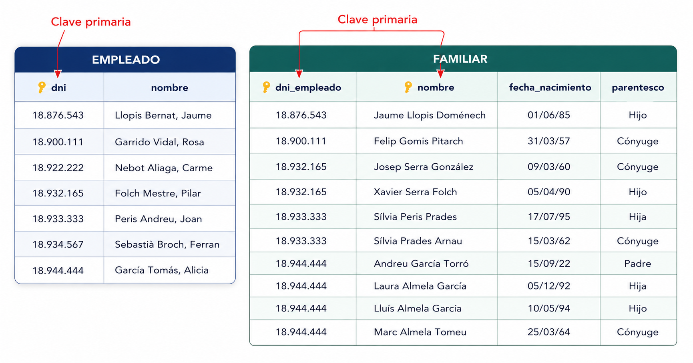
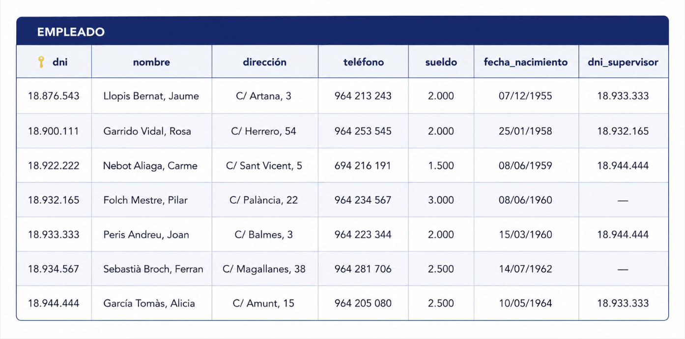

4. Restricciones
El Modelo Relacional define restricciones que garantizan la integridad de los datos. Hay dos tipos: inherentes (impuestas por el modelo) y de usuario (definidas por los diseñadores).
4.1 Restricciones Inherentes
Son impuestas por el propio Modelo Relacional. Toda relación válida debe cumplirlas:
1. Valores Atómicos
- Cada valor debe ser simple e indivisible
- NO se permiten atributos compuestos o multivaluados
- Excepto si se definen como campos simples separados
Ejemplo
❌ Nombre = "Juan García López" (compuesto)
✅ Nombre = "Juan", Apellido1 = "García", Apellido2 = "López" (atómicos)
2. Tuplas Distintas
- No pueden haber tuplas duplicadas en una relación: Cada fila debe ser única y representar una única ocurrencia de la entidad. Para garantizar esta unicidad se utilizan las claves primarias.
3. Orden No Significativo
- El orden de las tuplas no importa
- El orden de los atributos no importa
- Los datos se acceden por contenido, no por posición
4.2 Restricciones de Usuario (Semánticas)
Define el usuario para garantizar que la BD represente la realidad y evite errores.
4.2.1 Restricción de Dominio
Especifica qué valores puede tomar un atributo.
| Aspecto | Descripción |
|---|---|
| Tipo de dato | Entero, real, texto, fecha, hora, etc. |
| Rango | Intervalo permitido (ej: nota 0-10) |
| Enumeración | Valores específicos permitidos |
Ejemplo
- Sueldo: Real (rechaza "2.R00")
- Fecha: Formato DD-MM-YYYY (rechaza "31-2-1958")
- Nota: {MD, IN, SUF, BI, NOT, SOB}
4.2.2 Restricción de Clave Principal
Define un atributo (o conjunto) como identificador único de cada tupla.
Características:
- No puede ser nulo
- No puede repetirse
- Debe ser simple (máximo 3 campos)
Representación:
- EMPLEADO (dni, nombre, direccion, telefono, sueldo, fecha_n)
Buena Práctica
Si no existe una clave natural candidata, crear un campo artificial (ID, código, etc.)
4.2.3 Restricción de Unicidad
Asegura que un campo (o conjunto) no se repita, sin ser clave principal.
Cuándo usarla
Cuando algunos valores pueden ser nulos pero, si existen, deben ser únicos.
Ejemplo: Email de empleado (algunos sin email, pero no hay dos iguales)
Representación:
- EMPLEADO (dni, nombre, email)
- email [unico]
4.2.4 Restricción de Valor No Nulo
Obliga a que el atributo siempre tenga un valor.
Ejemplos
- Nombre: siempre obligatorio
- Dirección: puede ser nula si vive en el extranjero
- DNI: puede ser nulo si es extranjero
- EMPLEADO (dni, nombre, direccion, telefono, sueldo, fecha_n)
- nombre [no nulo]
4.2.5 Integridad Referencial
Garantiza que los valores de una clave externa solo apunten a registros existentes en la tabla referenciada.

Si en FAMILIAR existe dni_empleado como clave externa hacia EMPLEADO.dni, no puede aparecer un dni_empleado que no exista en EMPLEADO.
Ejemplo
No es válido insertar en FAMILIAR el DNI 18.754.321 si no existe antes en EMPLEADO.
También puede haber claves externas reflexivas (la misma tabla se referencia a sí misma), por ejemplo el atributo supervisor en EMPLEADO.

4.2.6 Acciones sobre claves ajenas
Cuando se borra o modifica una clave referenciada, suelen definirse estas acciones:
- NO ACTION: bloquea la operación si rompe integridad.
- CASCADE: propaga el cambio o borrado en cascada.
- SET NULL / SET DEFAULT: sustituye el valor de la clave externa por nulo o por defecto.
4.2.6 Restricciones Externas
Hay reglas de negocio que no se expresan directamente con las restricciones estándar del modelo relacional.
Estas restricciones externas suelen provenir del modelo E/R o de condiciones de negocio específicas.
Implementación habitual
Muchos SGBD resuelven estas reglas mediante disparadores (TRIGGERS), ejecutando lógica definida por el usuario tras inserciones, actualizaciones o borrados.